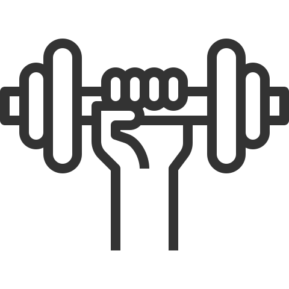
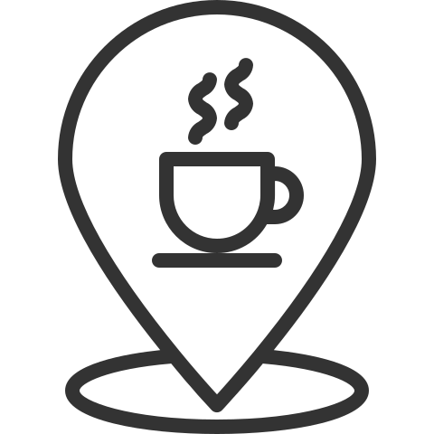

7.1 Чи читаєте ви електронні книжки - книжки з ноутбука/комп'ютера, планшета, смартфона
| ні | |
|---|---|
| не відповіли |
| так |
|---|
2. Чи любите ви читати?
| мені це зовсім нецікаво | |
|---|---|
| інколи хочеться щось почитати | |
| загалом люблю читати | |
| не уявляю свого життя без читання | |
| важко відповісти |
1. Як часто ви проводите дозвілля таким чином?
ніколи
декілька разів на рік
кілька разів на місяць
кілька разів на тиждень
щодня
ходжу в кіно / на концерти / на виставки
на природі
на природі
на природі
на природі
на природі
4. Скільки друкованних книжок Ви прочитали за останній рік?
4.1 А скільки з них було книжок українського видавництва?
6.1 Чи були серед придбанних Вами книжок такі, яві Вам не дуже потрібні, але ви купили їх з наступних причин?
| усі | ті, хто за останній рік придбали хоча б одну друковану книгу | ||
|---|---|---|---|
| на подарунок | |||
|  | щоб фінансово підтимати автора | ||
| щоб фінансово підтимати видавництво | |||
| нічого з наведенного | |||
| важко відповісти |